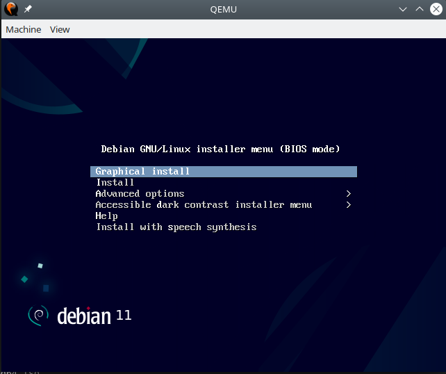

SAE1.03 Installation d'un poste de développement :
Le but de ce projet était d'installer une machine virtuelle à partir d'une station linux.
Cette SAE a permis d'apprendre à utiliser le shell pour installer une machine et des applications.
Durant cette SAE, nous avons donc appris à vérifier l'intégrité d'un fichier iso.
---------------------
---------------------
Puis nous avons appris à installer la machine à partir du bios. Durant ce projet, nous avons utilisé une interface graphique mais il est possible de le faire sans.
---------------------
---------------------
Et enfin, à partir de la machine virtuelle, nous avons installé plusieurs applications comme intellij ou encore git.
---------------------
SAE2.03 Installation de service réseau
Le but de ce projet était d'installer une machine virtuelle sans interface graphique et d'installer plusieurs applications comme postgresql, php et enfin phppgadmin.
Cette SAE a permis de s'améliorer dans l'utilisation du shell mais surtout de bien savoir configurer une machine virtuelle ainsi que des serveurs sql, php et phppgadmin.
A la fin de cette SAE, le rendu était sous forme d'un tutoriel en anglais. Qui nous a permis d'apprendre à bien expliquer et guider durant les étapes de programmation.
Tout d'abord, il fallait installer la machine virtuelle.
---------------------

---------------------
Par la suite, nous avons installé postgresql et configuré les fichiers grâce à nano pour pouvoir utiliser php et phppgadmin.
---------------------
---------------------
Malheureusement le tutoriel d'installation est en cours de création dès qu'il sera fini, il apparaîtra ici.